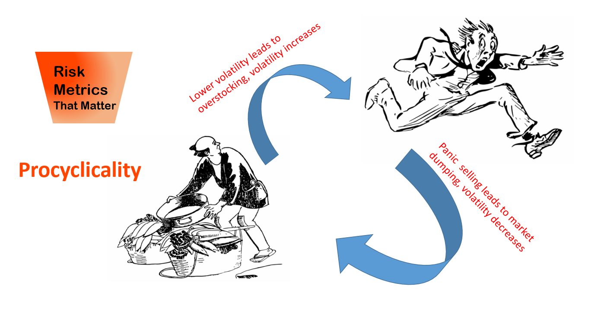
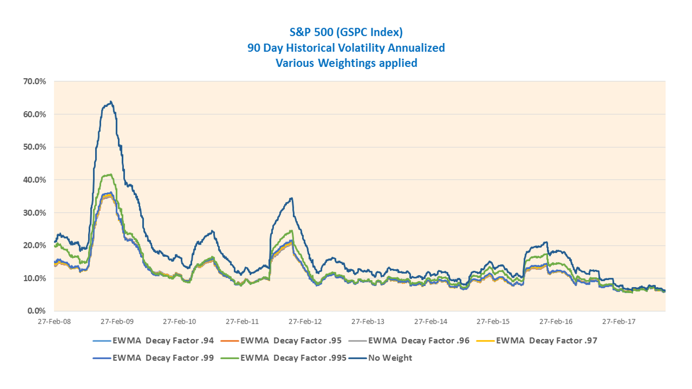
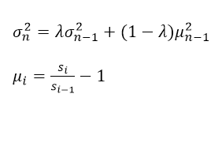
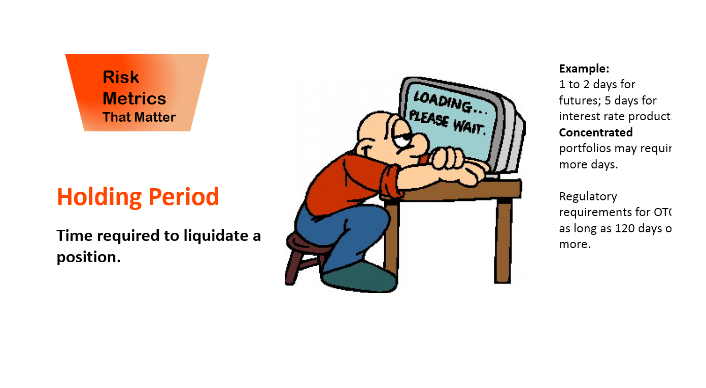

---
layout: metrics-template
---
<div class="blurb">
<P>
<A class="sub-nav" href="#Procyclicality">- Procyclicality</A><BR>
<A class="sub-nav" href="#HoldingPeriod">- Holding Period</A><BR>
<A class="sub-nav" href="#ObservationPeriod">- Observation Period</A>
</P>


	<span id="Procyclicality"/>
<H3>Procyclicality</H3>


<p ALIGN=RIGHT>
<a href="https://openclipart.org/detail/292225/running-man-2">clip art sources: running-man-2</a>
<a href="https://openclipart.org/detail/268174/guy-with-veggies">guy-with-veggies</a>
</p>
<p>Procyclic in context of market data as described here, is a condition of positive correlation between an action in the market place and the market price of an asset.  For example, as the price of an asset increases there is a tendency for the asset price to increase as more buyers enter the market.  As the price decreases there is a tendency for more sellers to enter the market further depressing the price of the asset.
<p>
This action increases the volatility of prices when panic buying or panic selling sets in.  The action can be exacerbated by holders of margin collateral increasing the required collateral forcing participants to abandon positions as requests for more collateral cannot be met.   
<p>
Conversely, if the volatility is low, both buyers/sellers may view the perceived lower risk as an opportunity to “load up” on positions, running the risk of a volatile movement that would force liquidation.
 
<p>

</p>

<p>Weighting factors can be used to reduce this source of volatility by reducing volatility when volatility is high and increasing volatility when volatility is low. 
<p>
The Exponentially Weighted Moving Average (EWMA) is a method that assigns weightings such that current volatility movements are ameliorated.  In addition, use of a filtered scaling will decrease volatility as volatility increases and vice versa.
<p>
“The margining model developed by CME Clearing is based on a Historical Value at Risk (HVaR) methodology with Exponentially Weighted Moving Average (EWMA) volatility re-scaling” – cmegroup.com website.   Other authorities and exchanges reference EWMA models as means of addressing procyclicality.
The following graph illustrates for the S&P 500 index, volatility at various decay factors with 1 being equal to no weighting.  The smaller the factor, the greater the smoothing.  (Data Source:  this is example data not intended for resale)

</p>

<p>The EWMA variance is,</p>

<p>where mu(i) is the change in the risk factor price, in the above case shown as a daily relative change.  Log changes and absolute changes can be used also.  Lambda is the decay factor which can be .97 as was used by J.P. Morgan.  A value of 1 means that there is no decay factor.
</p>

<span id="HoldingPeriod"/>
<H3>Holding Period</H3>

<p ALIGN=RIGHT>
<a href="https://www.picgirs.com/clip-art/waiting/clip-art-activities-waiting-687825">clip art sources: waiting</a>

<
</p>
<p>The holding period for a financial instrument is the estimate of the time horizon for effective hedging or close out of that product, particularly under stressed market conditions.  An example, where loss of liquidity is enforced by an exchange, is when a 20% decline in the S&P 500 index will terminate trading for the remainder of the trading day in both the cash equity market and all U.S. based  equity index futures and options, including E-mini S&P 500 and S&P 500 futures and options.  Bitcoin futures traded on the CME are also under a 20% circuit breaker.
<p>In the OTC market, the bankruptcy of Lehman Brothers is the classic case of time to settle OTC derivatives.  Although Retail OTC derivatives counterparties of Lehman terminated their contracts within weeks of bankruptcy filing under the safe harbor provisions, final settlement was a long process such that about 1,000 derivatives contracts remained "not settled" by the beginning of 2013, more than 4 years after the start of Lehman's bankruptcy. (Ref:  The Failure Resolution of Lehman Brothers, M.J. Fleming and A. Sarkar, NewYorkFed).
<p>Supervisory requirements for bank minimum capital or market risk using expected shortfall, require liquidity horizons of 10 days for interest rate risk in specified currencies, 10 days for equity prices of large cap instruments, 20 days for small cap equity, 10 days for FX rates in specified currency pairs, and a range of 20 to 120 days for commodities. (Ref: BCBS, Minimum capital requirements for market risk, Jan 2016).
<p>Holding periods are used in financial models to extend the daily risk into term risk where volatility increases proportional to the square roof of time.  If a daily volatility is observed, then the annualized volatility is a multiplication factor of the square root of 252 (trading days).  In HVar, it is possible to observe 2-day changes to obtain risk over a 2-day holding period, however this tends to breakdown with longer time horizons due to lack of data.  For example, a method is to take the standard deviation of daily changes in a value of an instrument and multiply by the SQRT of 5, if the time horizon is 5 business days.
<p>Holding periods thus impact the amount of collateral/initial margin required by the counterparty to a trade and has been a source of determining whether a counterparty wishes to do a tailored OTC transaction or a standardized exchange traded transaction, since typically, a listed transaction holding period could be 2-days. A similar OTC trade could have a holding period of 5 days.
</p>
<span id="ObservationPeriod"/>
<H3>Observation Period</H3>
<p>reserved for observation period stuff
</p>
</div><!-- /.blurb -->

